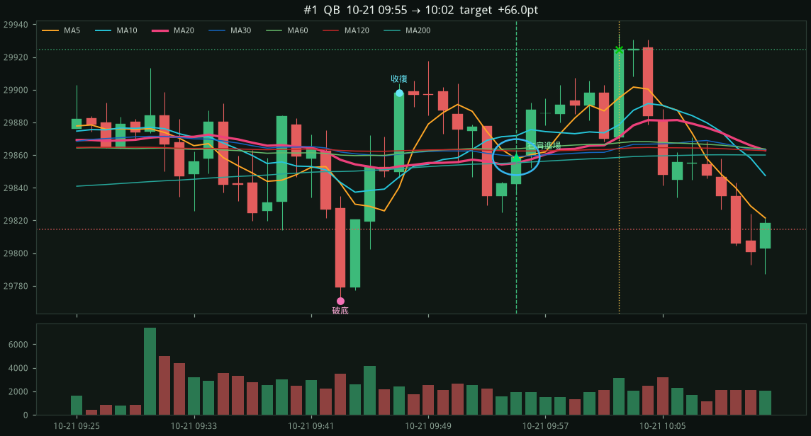
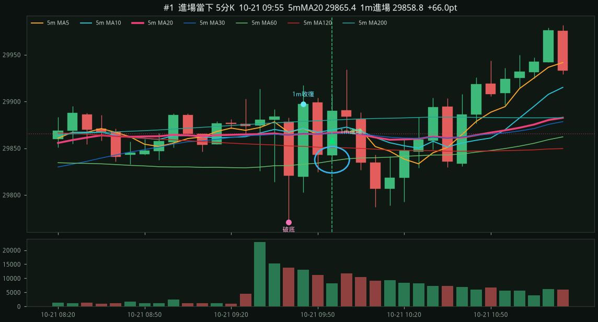
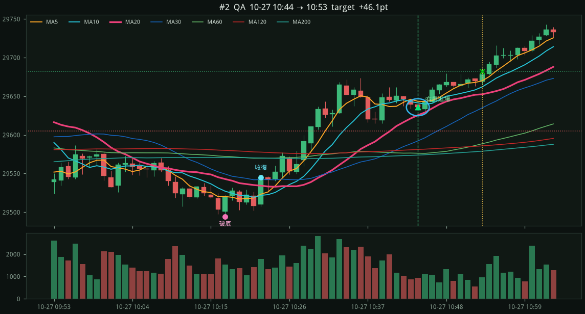
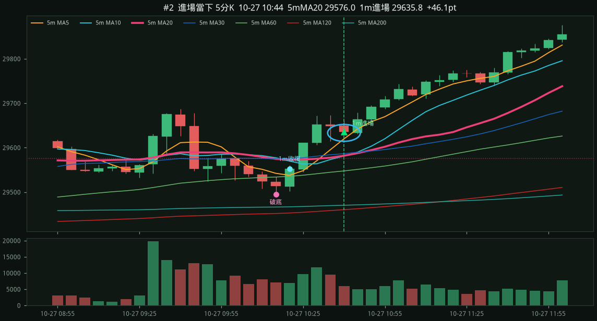

NQ=F 1m 破底翻 · 右肩在 MA20 上
只做日盤 09:30–15:45 ET。破底翻 → 收復粉紅 MA20（約 20 分鐘）→ 離開後右肩踩回 MA20 進場。停損在右肩低點下方，目標 1.5R；持有滿 60 根若收破 MA20 出場。進場若貼著下彎的 5m MA60（40 點內），或夾在下彎空頭排列的 5m MA20/MA30 蓋頭底下（45 點內），或遠低於下彎的 5m MA20（超過 45 點），則略過。五分 MA20 明確下彎（斜率低於 −5）時，追在它上方超過 35 點、或壓在斜率比 −15 更負的蓋子下，整波不進；即使上彎，噴離 5m MA20 超過 120 點也不再當右肩。五分粉紅剛上彎、綠線還下彎、兩條差不到 25 點且收盤已在綠線上（均線糾結），整波不進。右肩要先從反彈高點拉回至少 25 點，離開均線 3 根後即可回踩。進場收盤須貼著 1m MA20（高於不超過 20 點）；影線掃到但收盤彈走 30 點那種再等下一腳。大陰線砸上 MA20 不進，等下一根小 K 確認；實體超過 30 點且 5m MA20 下彎則這波作廢。13:00 後不進（午餐後／尾盤假右肩）。5m MA20 上彎時目標 2R，否則 1.5R。只做日盤破底。 每筆附進場當下五分 K 對照。
30d · 2026-10-15 14:15 → 2026-11-13 13:04 ET · bars=28552
筆數2
勝率100.0%
總點數+112.1
勝/負2/0
QA 1筆 +46.1 · QB 1筆 +66.0
漏斗：破底 213 → 深度夠 58 → 收復MA20 58 → 右肩回踩 2 → 進場 2（沒離開 4 · 沒收復 0 · 沒守住 22 · 風險 0 · 貼下彎5mMA60 2 · 貼下彎5mMA20/30蓋頭 2 · 遠低下彎5mMA20 5 · 下跌5m位置 5 · 五分糾結 1 · 間隔 0 · 追刀 6 · 午後 81 · 時段 993）
target1m右肩MA20QB5m對照
entry 29858.75 （右肩踩 1m MA20 29855.11）
stop 29814.75 (−44.0 pts，右肩低點下方）
target 29924.75 (1.5R)
exit 29924.75 target
破底 10-21 09:43 low 29771.00 / 2h低 29814.00
收復 09:47 → 右肩 09:55
MA5 29857.8 / MA10 29871.9 / MA20 29855.1 / MA60 29863.8
5m MA20 29865.4 下彎 -0.8 （進場 − 5mMA20 = -6.7）
5m MA30 29866.0 上彎 +3.2 （進場 − 5mMA30 = -7.2）
5m MA60 29834.4 上彎 +4.9 （進場 − 5mMA60 = +24.3）
1m K

進場當下 5分K（粉紅 = 5m MA20）

target1m右肩MA20QA5m對照
entry 29635.75 （右肩踩 1m MA20 29625.45）
stop 29605.00 (−30.8 pts，右肩低點下方）
target 29681.88 (1.5R)
exit 29681.88 target
破底 10-27 10:17 low 29494.50 / 2h低 29518.75
收復 10:22 → 右肩 10:44
MA5 29643.5 / MA10 29641.4 / MA20 29625.5 / MA60 29576.2
5m MA20 29576.0 下彎 -2.1 （進場 − 5mMA20 = +59.8）
5m MA30 29582.3 上彎 +9.4 （進場 − 5mMA30 = +53.5）
5m MA60 29544.9 上彎 +14.0 （進場 − 5mMA60 = +90.9）
1m K

進場當下 5分K（粉紅 = 5m MA20）
